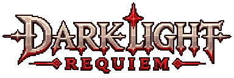

ARTE DE PRODUÇÃO · KATANA
ARTE DE PRODUÇÃO · KATANA01 / A LÂMINA
KATANA
Precisão, velocidade e alcance. Cortes encadeados, leitura de abertura e controle do ritmo definem o estilo da Katana.
PRECISÃOVELOCIDADEALCANCE

JOGARDARK FANTASY · HACK AND SLASH · PIXEL ART
Domine a Katana e os Punhos Abissais em um hack and slash 2D de fantasia sombria.
Entre nas ruínas de Vespera. Enfrente os Ecos, domine seu estilo de combate e siga o rastro de uma rivalidade marcada pelo eclipse.
01 / O UNIVERSO
Quando a fronteira entre Vespera e o Véu começa a se romper, as sombras ganham forma. Fabius atravessa esse mundo com sua lâmina, suas escolhas e perguntas que o aproximam de Lucius.
A ação frenética encontra a exploração e uma narrativa de fantasia sombria — sem revelar o desfecho.
CONHEÇA O CONFRONTO CENTRAL ↗
02 / ARSENAL
O futuro do combate de Fabius se concentra em duas identidades: a precisão da lâmina e o impacto do corpo a corpo.
ARTE DE PRODUÇÃO · KATANAPrecisão, velocidade e alcance. Cortes encadeados, leitura de abertura e controle do ritmo definem o estilo da Katana.
Combate físico, socos e chutes agressivos, pressão de curta distância e finalizações que dão peso a cada sequência.
Moto e Serras não fazem parte do arsenal futuro. Registros e builds históricos ainda podem apresentá-las; sua retirada do gameplay é uma etapa planejada.
03 / TRANSFORMAÇÕES
De Fabius Normal ao despertar do Serafim Carmesim, cada forma reflete um novo estágio de sua identidade.

O domínio começa com a própria técnica. A identidade de Fabius antes das transformações.

O carmesim toma o protagonismo em uma evolução marcada por energia intensa e presença vampírica.

Asas rubras e uma silhueta imponente definem o estágio mais dramático de Fabius.
INTEGRADO NO PROJETO As sequências oficiais de transformação de Ruptura e Serafim Carmesim já foram integradas. Isso não certifica novas animações completas para todas as ações, armas e direções. Referências exibidas são imagens de produção, não capturas da release pública.
04 / O OUTRO LADO DO ESPELHO
Um irmão. Uma espada. Um duelo que carrega o peso de tudo que aconteceu antes.

Lucius não é apenas mais um adversário. Sua presença conduz o confronto central de DARKLIGHT: REQUIEM.
INTEGRADO NO PROJETO A sequência oficial de transformação Arconte faz parte do projeto.
PLANEJADO Lucius 2.0 trará IA mais inteligente, novas respostas defensivas, contra-ataques, adaptação ao combate aéreo e transições de fase refinadas.
VEJA O CAMINHO DO DESENVOLVIMENTO ↗05 / APRESENTAÇÃO
Clareza, ritmo e identidade gótica. A próxima evolução busca tornar o combate, a exploração e os menus mais fáceis de acompanhar.
.png)
Navegação mais organizada, destaque para as duas armas e tipografia pixelada legível.

Orientação, objetivos e elementos visuais mais fáceis de localizar durante a exploração.

Feedback dos combos, indicadores da transformação, bossbar e diálogos com maior legibilidade. Sangue do Abismo respeitará o recurso real do jogo.
As imagens desta seção apresentam conceitos ou versões anteriores. Não são uma promessa de que os layouts mostrados já estejam implementados na build de testes.

06 / O MUNDO E SUA ATMOSFERA
Chuva em camadas, névoa, luar e iluminação contextual já fazem parte da evolução técnica do projeto. A atmosfera seguirá sendo refinada enquanto cenários, inimigos e chefes ganham mais personalidade.
INTEGRADO NO PROJETO Camadas atmosféricas e efeitos contextuais. PLANEJADO Polimento visual dos mapas, novos tratamentos de inimigos e bosses e cutscenes baseadas no GDD.
IMAGEM: REFERÊNCIA ARTÍSTICA · NÃO É CAPTURA DO JOGO07 / FUTURO DO PROJETO
O desenvolvimento segue uma ordem definida, sem datas de lançamento prometidas. A integração de um recurso não significa que a fase inteira esteja concluída.
08 / NOTÍCIAS DE DESENVOLVIMENTO
Atualizações com versão e estado verificável: o que está em testes, o que foi integrado e o que ainda vai mudar.
A pré-release teste-20261115 disponibiliza uma versão interna recente para testes. Inclui avanços de animações, transformações e atmosfera. O relatório registra 70 testes aprovados e 1 pendência de percurso automatizado.
VER VERSÃO E LIMITAÇÕES ↗As sequências oficiais de Ruptura, Serafim Carmesim e Lucius Arconte foram integradas ao projeto. A cobertura completa de animações e as revisões visuais permanecem sujeitas a validação.
CONHECER AS FORMAS ↗Katana e Punhos/Grevas Abissais serão as únicas armas do futuro. Moto e Serras sairão da seleção ativa, mas ainda podem aparecer na build de testes e em registros antigos.
CONHECER O ARSENAL ↗09 / ARQUIVOS VISUAIS
Registros autênticos do projeto e arte de direção visual. Cada imagem informa sua natureza.
10 / DISPONÍVEL PARA TESTES
A edição mais recente disponível para baixar é uma pré-release de testes para Windows x64, publicada em 15/11/2026. Ainda pode conter conteúdos antigos, limitações e erros conhecidos. Não representa o arsenal futuro nem a conclusão do roadmap.
Prefere o lançamento público anterior? Versão 1.0.13 (19/10/2026).
WINDOWS X64 · EXTRAIA O ZIP INTEIRO · CONFIRA O SHA-256 NA RELEASE